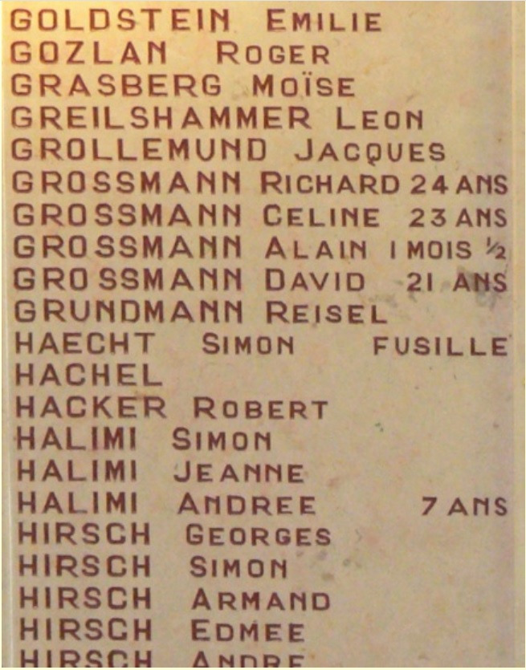

Portrait d’archive
Alain Grossmann
Alain GROSSMANN
Nom : GROSSMANN
Prénom(s) : Alain, Jacques
Date naissance : 28/02/1944
Âge (ans) : 0
Lieu naissance : Saint-Etienne
Pays ou département : Loire
Lieu rassemblement : Lyon
Dernière adresse : 20, rue Polignais
Ville : Saint-Etienne
Code postal : 42000
N° Convoi : 71
Date déportation : 13/04/1944
Informations diverses : Fils de Richard Grossman (06/04/1921 à Hanovre, Allemagne) tailleur et de Cécile Rabitchov (16/03/1921 à Paris 11e). Arrêtés à leur domicile le 03/11/1944 à Saint-Étienne. Internés le 08/04/1944 à Drancy et déportés (avec ses parents Cécile et Richard) par le convoi 71 à Auschwitz. Il a été le plus jeune déporté ligérien, il avait un mois et demi et est mort à Auschwitz le 18 avril 1944 en même temps que ses parents. Un square porte son nom à Saint Etienne.
Grossmann (Alain, Jacques), né le 28 février 1944 à Saint-Etienne (Loire), décédé le 18 avril 1944 à Auschwitz (Pologne). JO
Grossmann, née Rabitchov (Céline) le 16 mars 1921 à Paris 11e (Seine), décédée le 18 avril 1944 à Auschwitz (Pologne). Grossmann (Richard), né le 6 avril 1921 à Hanovre (Allemagne), décédé le 18 avril 1944 à Auschwitz (Pologne).
Lieu de déportation : Auschwitz
Lieu de départ : Drancy
Nombre total de déporté·e·s du convoi : 1500
Gazé·e·s à l'arrivée : 1265 (84,3 %)
Survivant·e·s en 1945 : 128 (8,5 %)